As border propriedades CSS permitem que você especifique o estilo, a largura e a cor da borda de um elemento.
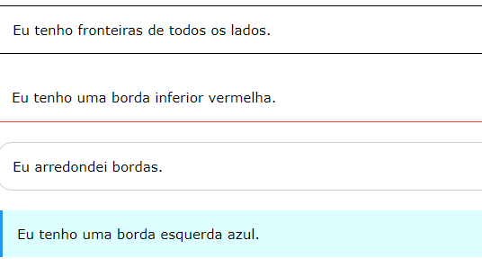 Estilo de bordaA border-stylepropriedade especifica o tipo de borda a ser exibido.
Os seguintes valores são permitidos:
A border-stylepropriedade pode ter de um a quatro valores (para a borda superior, borda direita, borda inferior e borda esquerda).
Exemplo 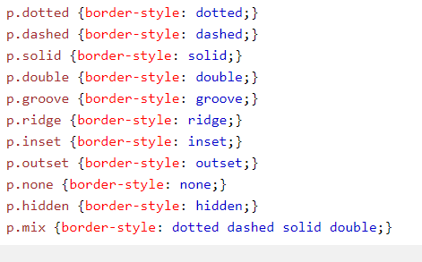Resultado:
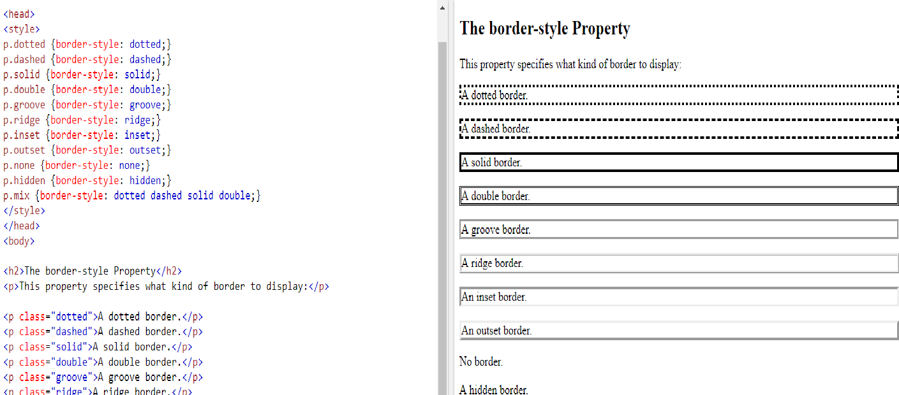A border-widthpropriedade especifica a largura das quatro bordas.
A largura pode ser definida como um tamanho específico (em px, pt, cm, em, etc) ou usando um dos três valores predefinidos: thin, medium ou thick.
A border-widthpropriedade pode ter de um a quatro valores (para a borda superior, borda direita, borda inferior e borda esquerda).
Largura de borda de 5px
Exemplo
A border-colorpropriedade é usada para definir a cor das quatro bordas.
A cor pode ser definida por:
A border-colorpropriedade pode ter de um a quatro valores (para a borda superior, borda direita, borda inferior e borda esquerda).
Se border-colornão estiver definido, herda a cor do elemento.
Borda vermelha
Exemplo 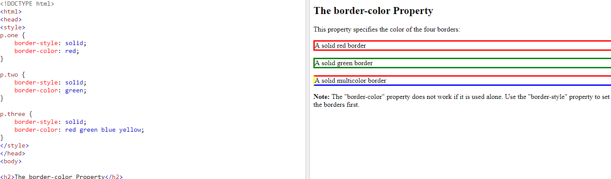Nos exemplos acima, você viu que é possível especificar uma borda diferente para cada lado.
Em CSS, há também propriedades para especificar cada uma das bordas (superior, direita, inferior e esquerda):
Estilos de Borda Diferentes
Exemplo 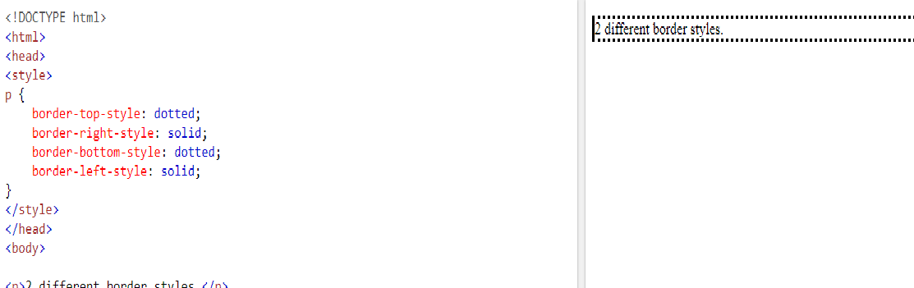O exemplo acima fornece o mesmo resultado como este:
Exemplo 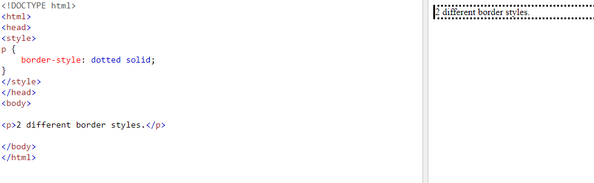Então, aqui está como funciona:
Se a border-stylepropriedade tiver quatro valores:estilo de borda: tracejado duplo pontilhado;
Se a border-stylepropriedade tiver três valores:
estilo de borda: duplo sólido pontilhado;Se a border-stylepropriedade tiver dois valores:
estilo de borda: sólido pontilhado;Se a border-stylepropriedade tiver um valor:
estilo de borda: pontilhado;A border-stylepropriedade é usada no exemplo acima. No entanto, também funciona com border-width e border-color.
Border - Propriedade de taquigrafiaComo você pode ver nos exemplos acima, há muitas propriedades a serem consideradas ao lidar com bordas.
Para encurtar o código, também é possível especificar todas as propriedades de borda individuais em uma propriedade.
A borderpropriedade é uma propriedade abreviada para as seguintes propriedades de borda individuais:
Resultado:
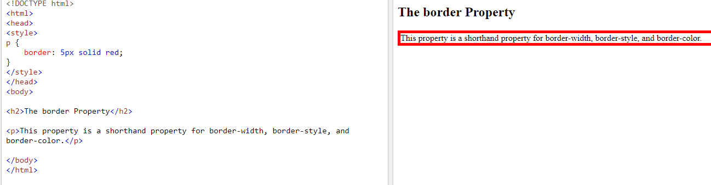Você também pode especificar todas as propriedades de borda individuais para apenas um lado:
Fronteira Esquerda 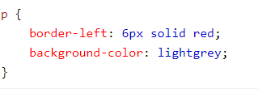Resultado:
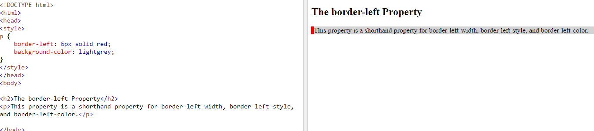 Borda inferior 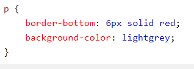Resultado:
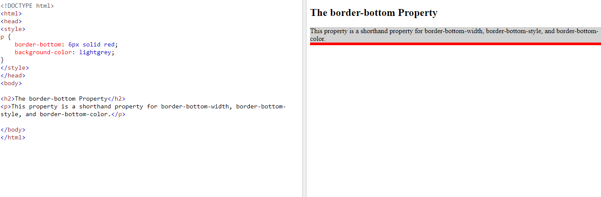 Bordas arredondadasA border-radiuspropriedade é usada para adicionar bordas arredondadas a um elemento:
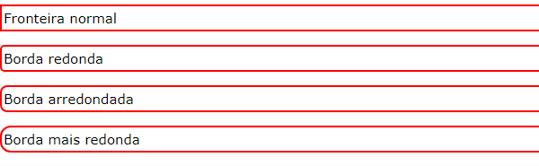 Exemplo 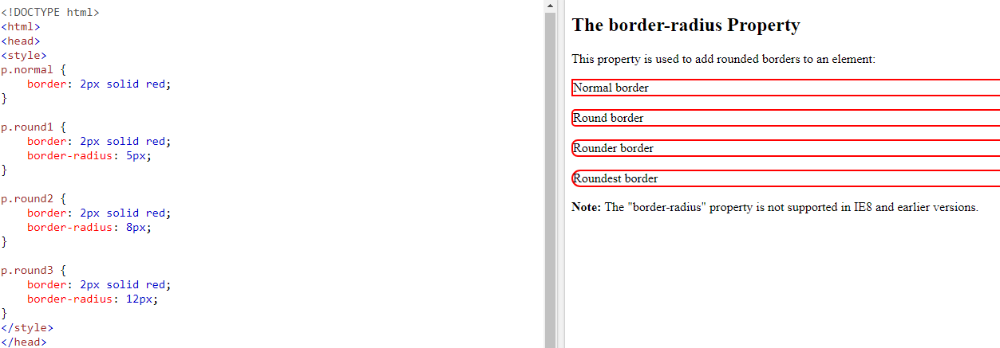